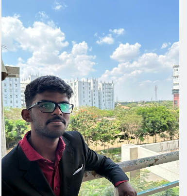

Kumaran V
AI Researcher · Federated Learning · Neuro-Inspired Systems
Building research-grade machine learning systems focused on privacy-preserving learning, multimodal retrieval, and biologically inspired neural computation.
About Me
I am a final-year B.Tech student and independent AI researcher focused on building research-grade machine learning systems. My work spans federated learning for privacy-preserving face recognition and biologically inspired multimodal retrieval using spiking neural networks. I am interested in representation learning, retrieval systems, and reproducible ML pipelines.
Primary Focus Areas
- Federated learning and privacy-preserving machine learning
- Multimodal representation learning and retrieval systems
- Spiking neural networks and biologically inspired models
- End-to-end, reproducible machine learning pipelines
Connect With Me
Open to research internships and academic collaboration.